⚕️La Danza de la ↔️Adaptación y la ↕️Evolución
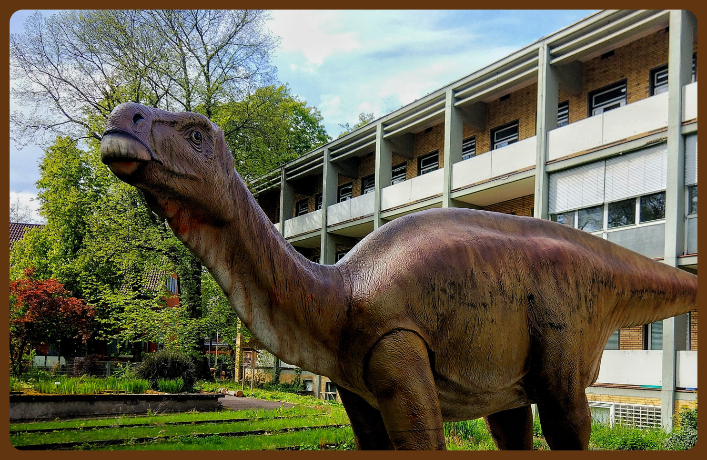
El Control Adaptativo y La Evolución de las Especies.
🎬 Preámbulo:
La 📐Proporción, La ♻️Integración, La ❓Incertidumbre, y El 🧑🧑🧒🧒Doble Par Complementario,
La Proporción, la Integración y La Incertidumbre constituyen tres dinámicas fundamentales para comprender por qué la vida cambia, persiste y se diversifica. Juntas expresan una forma de flexibilidad estructurada: la capacidad de transformarse sin perder continuidad.

El Doble Par Complementario aporta la arquitectura mínima de redundancia que permite sostener esas dinámicas en el tiempo. Representa una estructura flexible : suficientemente estable para conservar información y suficientemente abierta para adaptarse al cambio.

La Inteligencia Humana ha desarrollado herramientas matemáticas para describir procesos de regulación, adaptación y organización. Para empezar, podemos hacer uso de la Teoría de Control y de la Geometría Fractal, cuyos lenguajes ofrecen analogías útiles para explorar la dinámica evolutiva.
A lo largo de este ensayo iremos integrando gradualmente otras teorías y conceptos que permitan ampliar y contextualizar estas ideas.
A continuación exploraremos diversas analogías que permiten aplicar este formalismo en distintos campos cuando se integra con la Relación de Doble Par Complementario.
1. La Proporción
(P)
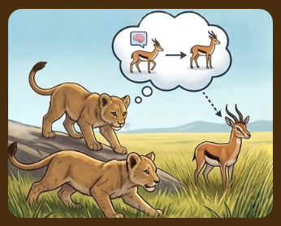
es el esfuerzo inmediato ⚡, la respuesta que damos al presente. Un pico que se alarga cuando el alimento escasea, un músculo que se activa cuando el alimento está a la vista. Es la energía que se gasta para mantener el equilibrio 🔄.
2. La Integración
(I)
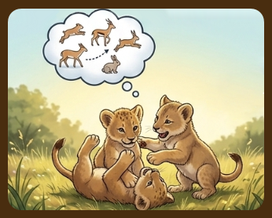
es la memoria acumulada 🧠, el cimiento que construimos con cada experiencia. Es lo que permite que un linaje no empiece desde cero, sino que herede las soluciones del pasado. Integrar es consolidar lo vivido y usarlo como base 🏗️.
3. La Incertidumbre
(Derivada-D)
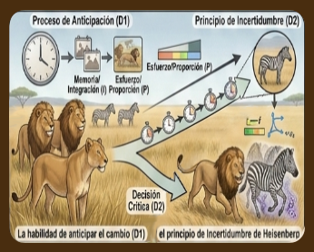
es la capacidad de notar que el suelo se mueve bajo nuestros pies. Es la habilidad de anticipar el cambio apoyado en la memoria o Integración y la Proporción o esfuerzo necesario. Este concepto conecta con una de las ideas más bellas de la física: el principio de incertidumbre de Heisenberg ⚛️.
Estos tres conceptos se engranan con una Unidad Mínima de Equilibrio Adaptativo Dinámico 🧩, la UMEAD , cuya estructura íntima es un doble par complementario: cuatro elementos que se respaldan mutuamente 🔐. Esa redundancia es la clave de su estabilidad.
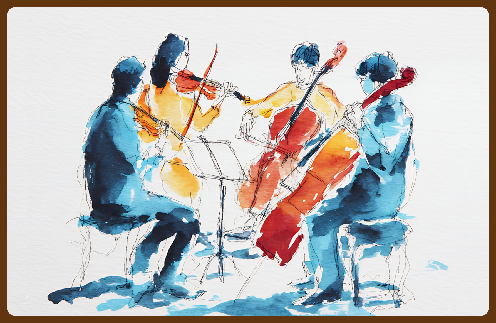
Tal vez uno de los ejemplos más intuitivos que nos regalan la naturaleza y la ciencia sea la estructura del
ADN, formada por cuatro bases nitrogenadas que se emparejan de manera complementaria: Adenina con Timina y
Guanina con Citosina.
El par Adenina-Timina (A-T) se mantiene unido por dos puentes de hidrógeno, lo que suele asociarse con una
mayor facilidad para separarse y reorganizarse durante ciertos procesos biológicos.
Por ello, puede imaginarse como una relación más flexible y adaptable.
A-T: Dos puentes de hidrógeno
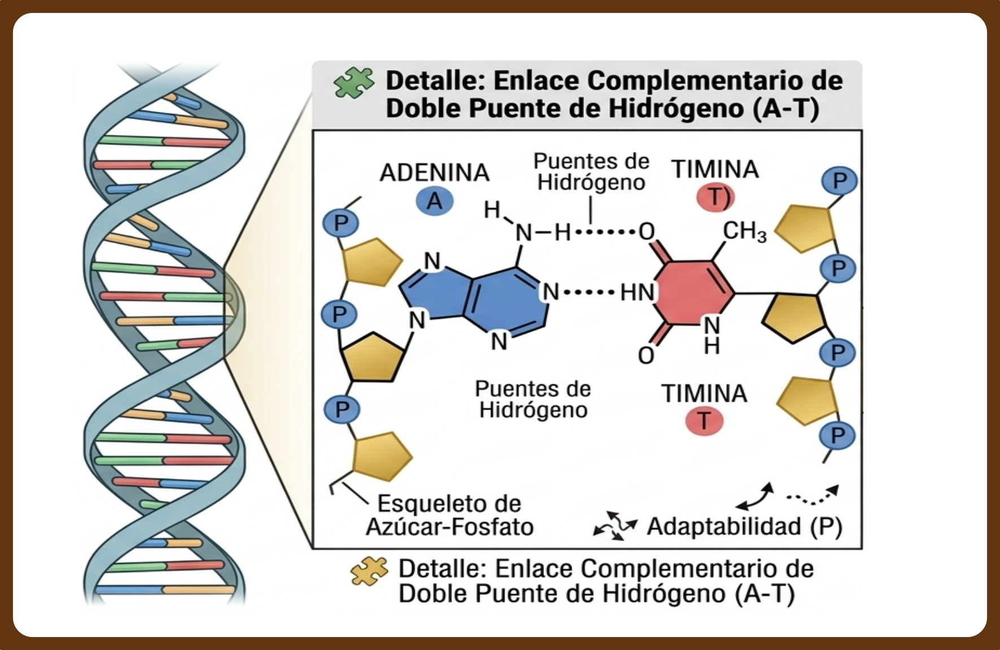
En cambio, el par Guanina-Citosina (G-C) está unido por tres puentes de hidrógeno, lo que aporta una mayor resistencia a la separación. Por eso suele relacionarse con una mayor estabilidad estructural.
G-C: Tres puentes de hidrógeno
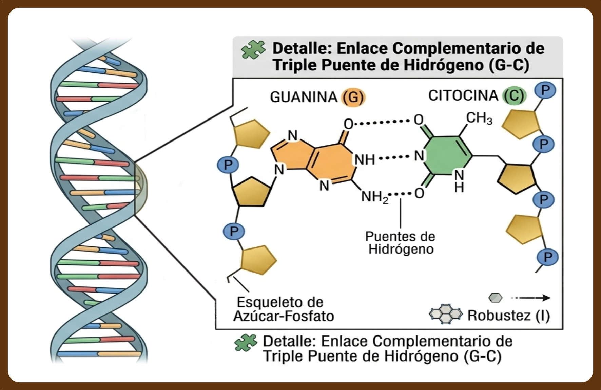
En términos sencillos, A-T aporta flexibilidad y G-C aporta estabilidad; ambas propiedades son necesarias para que el ADN conserve su estructura y, al mismo tiempo, pueda copiarse y funcionar dentro de la célula.
🔁 Síntesis PID · Un lazo de control adaptativo para la evolución
La Proporción (P) actúa como el impulso corrector inmediato que responde a las desviaciones del entorno; la Integración (I) recoge la historia acumulada del linaje, dotando de persistencia a las soluciones exitosas; y la Incertidumbre (D) afina la sensibilidad hacia los cambios emergentes, permitiendo anticipar trayectorias sin necesidad de certeza absoluta.
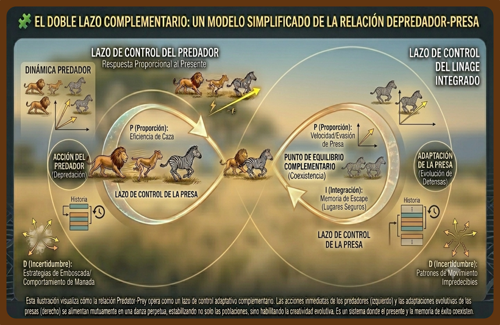
En conjunto, estas tres dinámicas operan de forma análoga a un lazo de control adaptativo que no solo estabiliza, sino que habilita la creatividad evolutiva: la danza perpetua entre el presente, la memoria y la posibilidad.
📖 Itinerario de Navegación
📖 Módulo 1:
Ensayo Universal
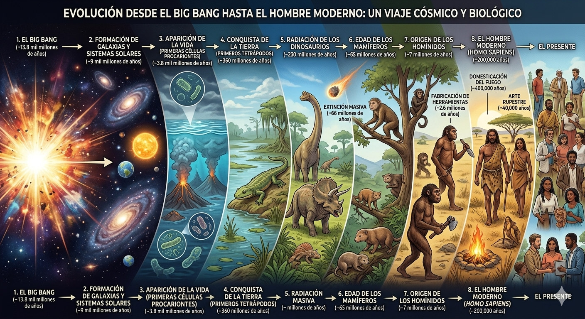
Un viaje cronológico por la historia de la vida 🌍: desde las primeras moléculas hasta la era contemporánea. Ocho capítulos que recorren el alfabeto del ADN, la danza celular, la persistencia residual y las bifurcaciones evolutivas.
🧭 Módulo 2:
Marco Conceptual
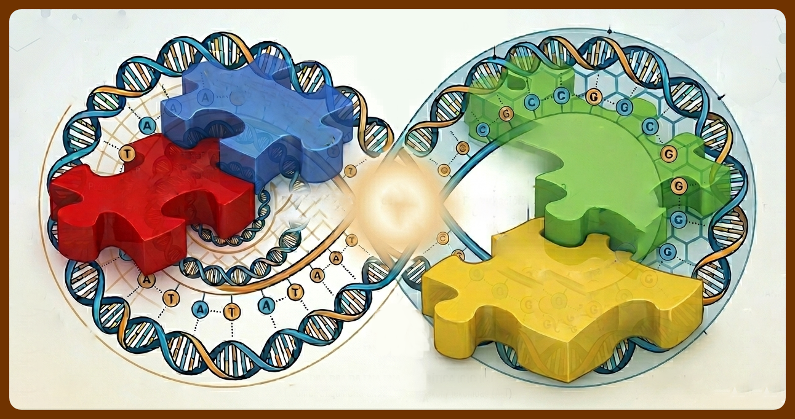
Los constructos operacionales que dan coherencia al modelo 🧩: acoplamiento estructural, umbral crítico θ_c, UMEAD, campos adaptativos, principios variacionales y la constante κ.
📐 Módulo 3:
Formalización Geométrica
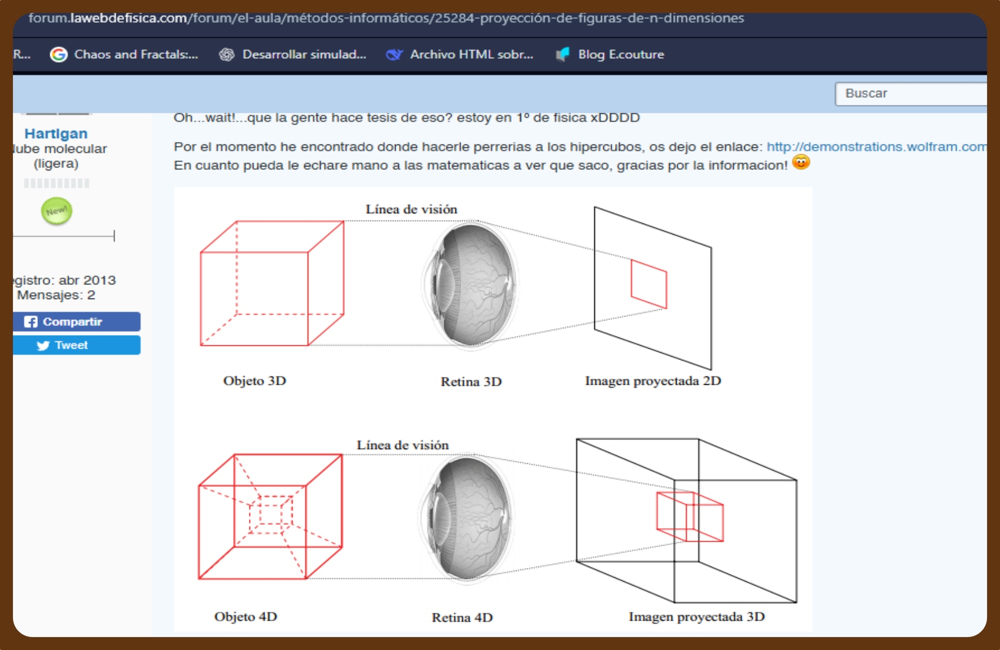
Operadores topológicos y su validación empírica 🌀: fractal, hipercubo, campo de Möbius, hiperpiñón, nichos dinámicos y el observador constitutivo.
📊 Módulo 4:
Apéndice Matemático
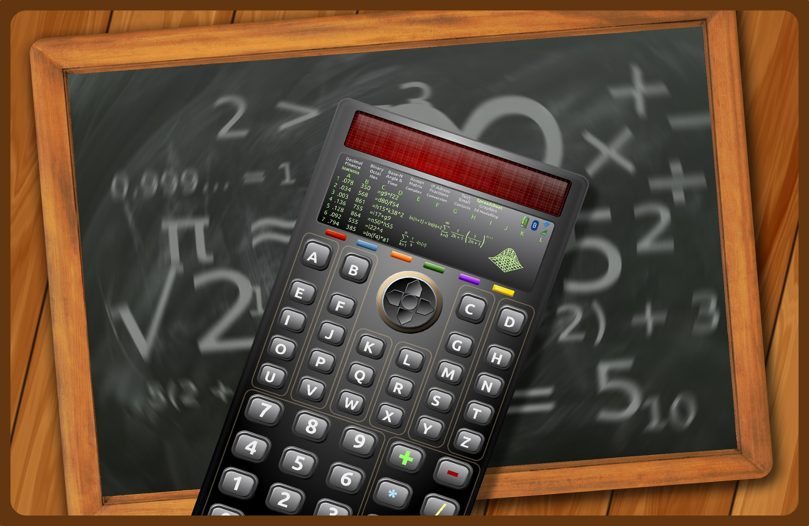
El modelo McDee-11 en su expresión formal 📐: ecuación de evolución de trayectorias, operador fasorial, límite hipercúbico y validación computacional.
📚 Documentos Complementarios del Ecosistema
- 📄 Documento A: Caso observacional — Primer registro empírico del modelo. Enlace
- 📄 Documento B: Runge‑Kutta y el código de cuatro letras. Enlace
- 📄 Documento C: Electromagnetismo y el campo adaptativo. Enlace
- 📄 Documento D: Termofluidos y la dinámica adaptativa. Enlace
- 📄 Documento E: Pinzones de Darwin y McDee-11. Enlace (próximamente)
- 📄 Documento F: Granularidad Celular. Enlace (próximamente)
- 📄 Documento G: Simulaciones Computacionales. Enlace (próximamente)
- 📄 Documento H: Nichos Dinámicos y Control Adaptativo. Enlace (próximamente)
📖 Ensayo Modular — La danza de la adaptación y la evolución
🌐 Proyecto newrostair-11 · GitHub Pages · 2026